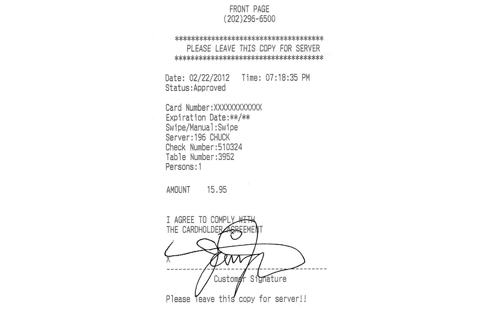
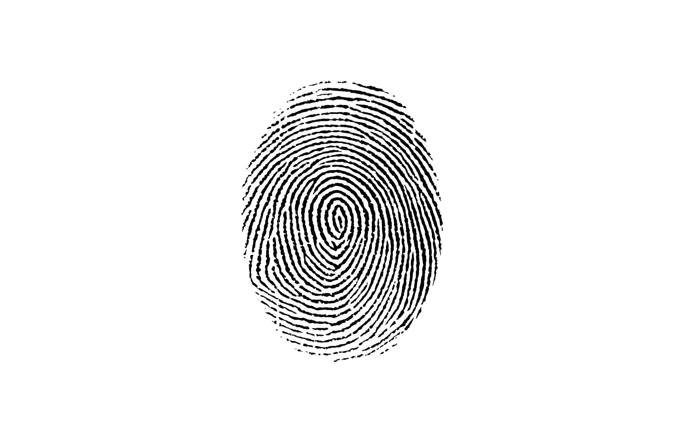

Verification systems in the common era are predominantly embedded in maintaining a simple, efficient means of gaining access to a platform or device. Banking apps have introduced fingerprint authentication into their systems for convenience to speed up the process of paying. Replacing the pin code (and its predecessor; the signature) supplies an immediacy to the act of spending and purchasing items. A simple hover of a thumb or tap of a phone overturns the traditional method of plugging numbers into a card reader.
What if this was taken one step further? What if we never had to lift a finger again? 'Facebank' is a visualisation of the power biometrics could wield to surpass counterfeiting and stealing uses the face to engage with its environment. A set-up security camera in a shop may scan your face and automatically purchase your items for you as you exit the shop. Linked to your entire account, savings and all, the bagged items are calculated and the costs are withdrawn without a second glance. It appears excessively encroaching on the security of one's account, yet plausible with the rate today's society wishes to operate.
